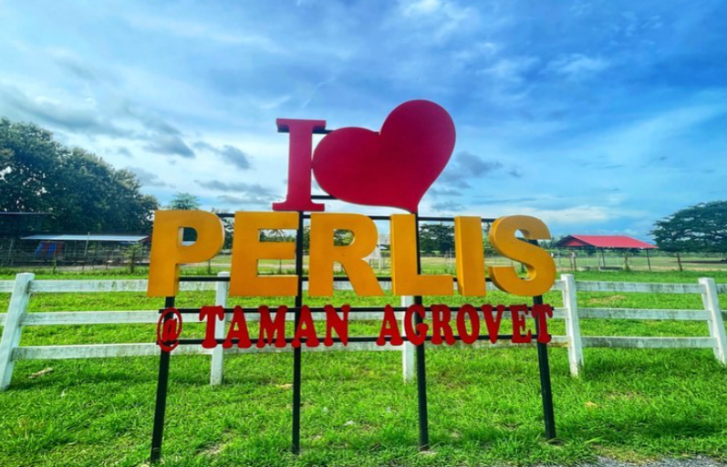

Main responsibilities and contributions towards agro-tourism development in Perlis
As a Veterinary Assistant and Field Supervisor, he is responsible for monitoring animal health, supervising feeding activities, and ensuring proper livestock care at Taman Agrovet Perlis.
He also observes animal behaviour and ensures early detection of diseases to maintain a healthy environment.
His work supports Agrovet Perlis as an agro-tourism site by ensuring animals are well maintained for visitors and educational programs.
He also helps promote awareness about veterinary services and livestock management in Perlis.
